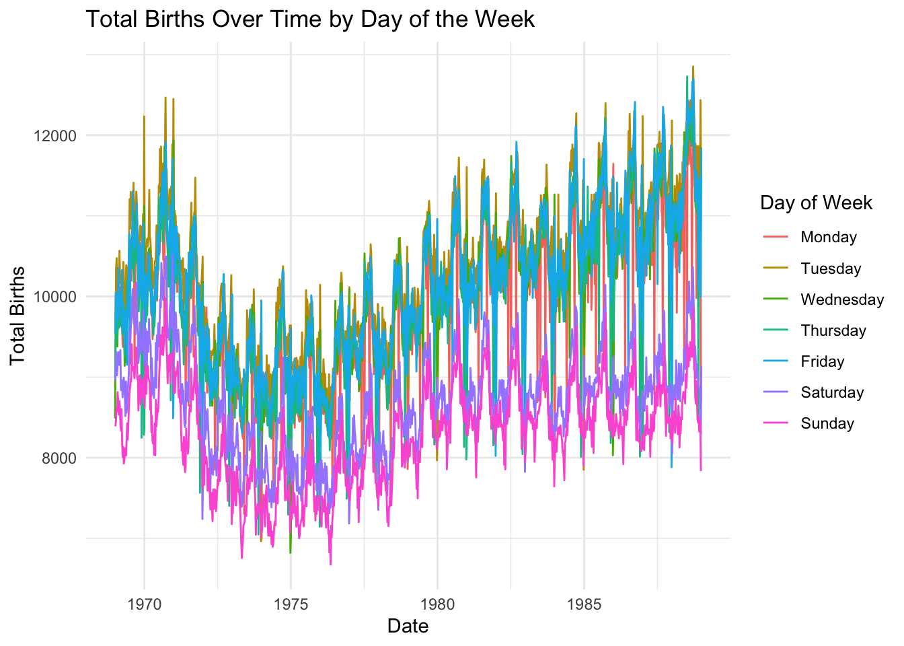
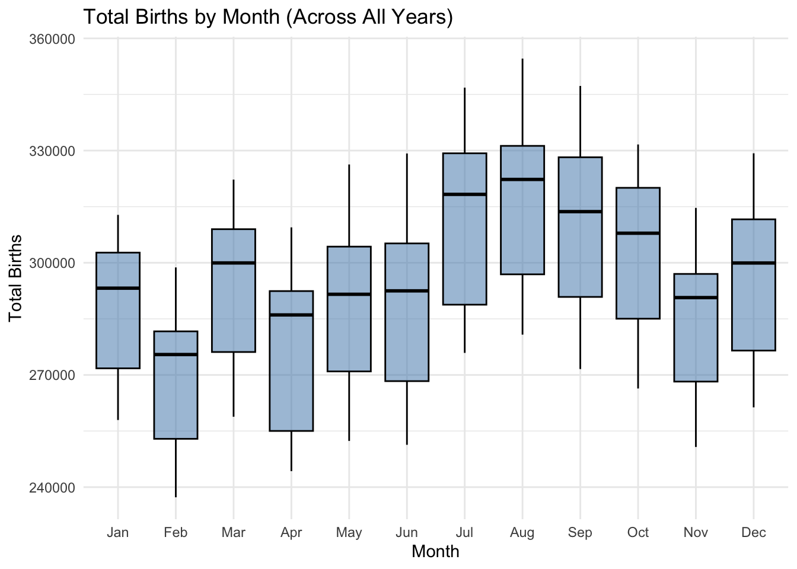
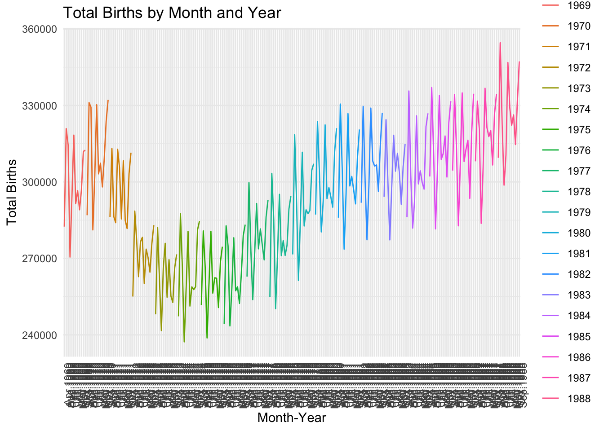
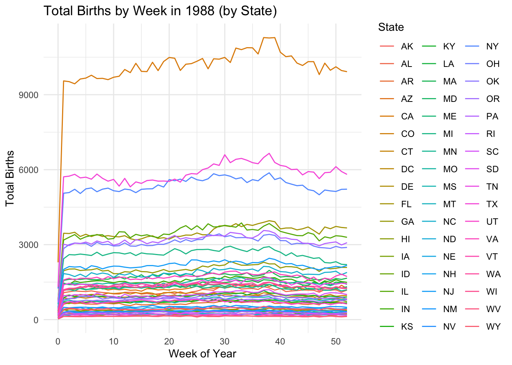
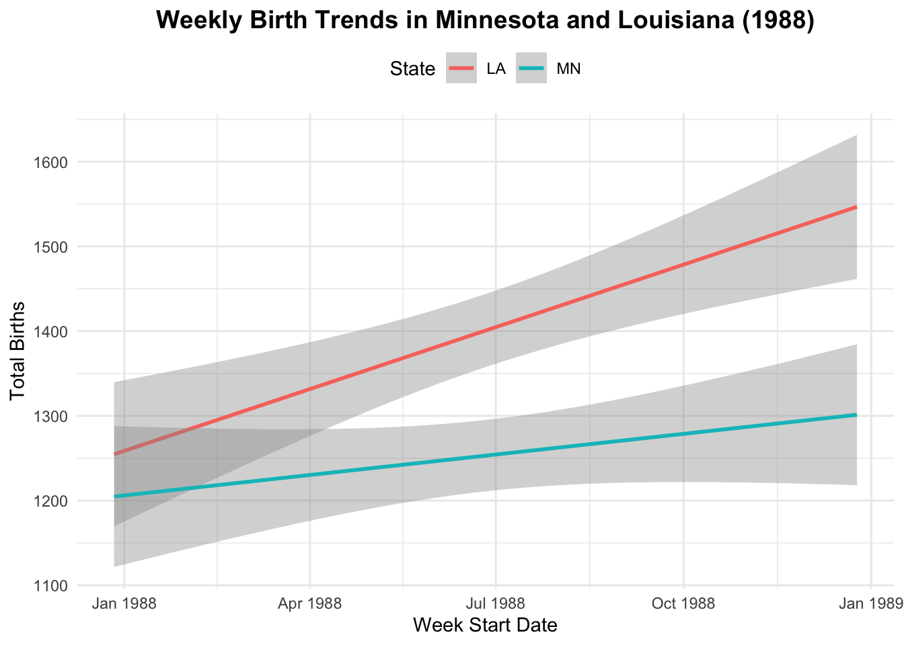

Code
# A tibble: 3 × 2
species n
<chr> <int>
1 Adelie 152
2 Chinstrap 68
3 Gentoo 124# A tibble: 3 × 2
species n
<chr> <int>
1 Adelie 152
2 Chinstrap 68
3 Gentoo 124# A tibble: 2 × 2
species n
<chr> <int>
1 Adelie 152
2 Chinstrap 68# A tibble: 6 × 8
species island bill_length_mm bill_depth_mm flipper_length_mm body_mass_g
<chr> <chr> <dbl> <dbl> <dbl> <dbl>
1 Adelie Torgersen 39.1 18.7 181 3750
2 Adelie Torgersen 39.5 17.4 186 3800
3 Adelie Torgersen 40.3 18 195 3250
4 Adelie Torgersen NA NA NA NA
5 Adelie Torgersen 36.7 19.3 193 3450
6 Adelie Torgersen 39.3 20.6 190 3650
# ℹ 2 more variables: sex <chr>, year <dbl>Example 1
# A tibble: 1 × 1
`sum(is.na(body_mass_g))`
<int>
1 2[1] 342Example 2
Explain why we should only use na.omit() in extreme circumstances. …..
[1] "species" "island" "bill_length_mm"
[4] "bill_depth_mm" "flipper_length_mm" "body_mass_g"
[7] "sex" "year" # A tibble: 344 × 6
species bill_length_mm bill_depth_mm flipper_length_mm body_mass_g sex
<chr> <dbl> <dbl> <dbl> <dbl> <chr>
1 Adelie 39.1 18.7 181 3750 male
2 Adelie 39.5 17.4 186 3800 female
3 Adelie 40.3 18 195 3250 female
4 Adelie NA NA NA NA <NA>
5 Adelie 36.7 19.3 193 3450 female
6 Adelie 39.3 20.6 190 3650 male
7 Adelie 38.9 17.8 181 3625 female
8 Adelie 39.2 19.6 195 4675 male
9 Adelie 34.1 18.1 193 3475 <NA>
10 Adelie 42 20.2 190 4250 <NA>
# ℹ 334 more rows# A tibble: 344 × 4
species bill_length_mm bill_depth_mm flipper_length_mm
<chr> <dbl> <dbl> <dbl>
1 Adelie 39.1 18.7 181
2 Adelie 39.5 17.4 186
3 Adelie 40.3 18 195
4 Adelie NA NA NA
5 Adelie 36.7 19.3 193
6 Adelie 39.3 20.6 190
7 Adelie 38.9 17.8 181
8 Adelie 39.2 19.6 195
9 Adelie 34.1 18.1 193
10 Adelie 42 20.2 190
# ℹ 334 more rows# A tibble: 344 × 3
species bill_length_mm bill_depth_mm
<chr> <dbl> <dbl>
1 Adelie 39.1 18.7
2 Adelie 39.5 17.4
3 Adelie 40.3 18
4 Adelie NA NA
5 Adelie 36.7 19.3
6 Adelie 39.3 20.6
7 Adelie 38.9 17.8
8 Adelie 39.2 19.6
9 Adelie 34.1 18.1
10 Adelie 42 20.2
# ℹ 334 more rows# A tibble: 344 × 3
species bill_length_mm flipper_length_mm
<chr> <dbl> <dbl>
1 Adelie 39.1 181
2 Adelie 39.5 186
3 Adelie 40.3 195
4 Adelie NA NA
5 Adelie 36.7 193
6 Adelie 39.3 190
7 Adelie 38.9 181
8 Adelie 39.2 195
9 Adelie 34.1 193
10 Adelie 42 190
# ℹ 334 more rows# A tibble: 344 × 8
species island bill_length_mm bill_depth_mm flipper_length_mm body_mass_g
<chr> <chr> <dbl> <dbl> <dbl> <dbl>
1 Adelie Biscoe 37.8 18.3 174 3400
2 Adelie Biscoe 37.7 18.7 180 3600
3 Adelie Biscoe 35.9 19.2 189 3800
4 Adelie Biscoe 38.2 18.1 185 3950
5 Adelie Biscoe 38.8 17.2 180 3800
6 Adelie Biscoe 35.3 18.9 187 3800
7 Adelie Biscoe 40.6 18.6 183 3550
8 Adelie Biscoe 40.5 17.9 187 3200
9 Adelie Biscoe 37.9 18.6 172 3150
10 Adelie Biscoe 40.5 18.9 180 3950
# ℹ 334 more rows
# ℹ 2 more variables: sex <chr>, year <dbl># A tibble: 8 × 3
species sex n
<chr> <chr> <int>
1 Adelie female 73
2 Adelie male 73
3 Adelie <NA> 6
4 Chinstrap female 34
5 Chinstrap male 34
6 Gentoo female 58
7 Gentoo male 61
8 Gentoo <NA> 5# A tibble: 8 × 3
# Groups: species [3]
species sex mean
<chr> <chr> <dbl>
1 Adelie female 3369.
2 Adelie male 4043.
3 Adelie <NA> 3540
4 Chinstrap female 3527.
5 Chinstrap male 3939.
6 Gentoo female 4680.
7 Gentoo male 5485.
8 Gentoo <NA> 4588.[1] "Date"[1] May
12 Levels: Jan < Feb < Mar < Apr < May < Jun < Jul < Aug < Sep < ... < Dec state year month day date wday births
1 AK 1969 1 1 1969-01-01 Wed 14
2 AL 1969 1 1 1969-01-01 Wed 174
3 AR 1969 1 1 1969-01-01 Wed 78
4 AZ 1969 1 1 1969-01-01 Wed 84
5 CA 1969 1 1 1969-01-01 Wed 824
6 CO 1969 1 1 1969-01-01 Wed 100[1] 372864 7# A tibble: 51 × 2
state days_of_data
<chr> <int>
1 AK 7305
2 AL 7305
3 AR 7305
4 AZ 7305
5 CA 7305
6 CO 7305
7 CT 7305
8 DC 7305
9 DE 7305
10 FL 7305
# ℹ 41 more rows[1] 70486538# A tibble: 51 × 2
state total_births
<chr> <int>
1 VT 147886
2 WY 154019
3 AK 185385
4 DE 188705
5 SD 235734
6 ND 238696
7 NV 241470
8 MT 253884
9 NH 264984
10 RI 265038
# ℹ 41 more rowsCreate a new dataset named daily_births that includes the total number of births per day (across all states) and the corresponding day of the week, eg, Mon. NOTE: Name the column with total births so that it’s easier to wrangle and plot.
Using this data, construct a plot of births over time, indicating the day of week.
# A tibble: 6 × 3
date total_births day_of_week
<dttm> <int> <fct>
1 1969-01-01 00:00:00 8486 Wednesday
2 1969-01-02 00:00:00 9002 Thursday
3 1969-01-03 00:00:00 9542 Friday
4 1969-01-04 00:00:00 8960 Saturday
5 1969-01-05 00:00:00 8390 Sunday
6 1969-01-06 00:00:00 9560 Monday 
Calculate the total number of births in each month and year, eg, Jan 1969, Feb 1969, …. Label month by names not numbers, eg, Jan not 1. Then, plot the births by month and comment on what you learn.
# Either this one
monthly_births <- Birthdays |>
mutate(month_name = month.abb[month]) |>
group_by(year, month_name) |>
summarize(total_births = sum(births), .groups = "drop") |>
mutate(month_name = factor(month_name, levels = month.abb))
#View(monthly_births)
ggplot(monthly_births, aes(x = month_name, y = total_births)) +
geom_boxplot(fill = "steelblue", color = "black", alpha = 0.5) +
labs(
title = "Total Births by Month (Across All Years)",
x = "Month",
y = "Total Births"
) +
theme_minimal()
# A tibble: 6 × 3
# Groups: month [6]
month year total_births
<chr> <chr> <int>
1 May 1969 289070
2 Apr 1969 282470
3 Aug 1969 320922
4 Dec 1969 314540
5 Feb 1969 270534
6 Jan 1969 293876ggplot(births_by_month_year, aes(x = interaction(month, year), y = total_births, group = year)) +
geom_line(aes(color = year)) +
labs(title = "Total Births by Month and Year",
x = "Month-Year",
y = "Total Births",
color = "Year") +
theme_minimal() +
theme(axis.text.x = element_text(angle = 90, hjust = 1))
In 1988, calculate the total number of births per week in each state. Get rid of week “53”, which isn’t a complete week! Then, make a line plot of births by week for each state and comment on what you learn. For example, do you notice any seasonal trends? Are these the same in every state? Any outliers?
births_per_week_1988 <- Birthdays |>
filter(format(date, "%Y") == "1988") |>
mutate(week = format(date, "%U")) |>
filter(week != "53") |>
group_by(state, week) |>
summarise(total_births = sum(births), .groups = 'drop')
ggplot(births_per_week_1988, aes(x = as.integer(week), y = total_births, color = state, group = state)) +
geom_line() +
labs(title = "Total Births by Week in 1988 (by State)",
x = "Week of Year",
y = "Total Births",
color = "State") +
theme_minimal() 
Repeat the above for just Minnesota (MN) and Louisiana (LA). MN has one of the coldest climates and LA has one of the warmest. How do their seasonal trends compare? Do you think these trends are similar in other colder and warmer states? Try it!
mn_la_births <- Birthdays |>
filter(year == 1988) |>
filter(state %in% c("MN", "LA")) |>
mutate(week_start = floor_date(date, unit = "week")) |>
group_by(state, week_start) |>
summarize(total_births = sum(births), .groups = "drop")
if (nrow(mn_la_births) == 0) {
stop("No data found for Minnesota (MN) or Louisiana (LA). Check the dataset.")
}
ggplot(mn_la_births, aes(x = week_start, y = total_births, color = state)) +
geom_smooth(size = 1, method = "lm") +
labs(
title = "Weekly Birth Trends in Minnesota and Louisiana (1988)",
x = "Week Start Date",
y = "Total Births",
color = "State"
) +
theme_minimal() +
theme(
plot.title = element_text(face = "bold", size = 14, hjust = 0.5),
legend.position = "top"
)
Create a dataset with only births in Massachusetts (MA) in 1979 and sort the days from those with the most births to those with the fewest.
# A tibble: 6 × 2
date total_births
<dttm> <int>
1 1979-09-28 00:00:00 262
2 1979-09-11 00:00:00 252
3 1979-12-28 00:00:00 249
4 1979-09-26 00:00:00 246
5 1979-07-24 00:00:00 245
6 1979-04-27 00:00:00 243Make a table showing the five states with the most births between September 9, 1979 and September 12, 1979, including the 9th and 12th. Arrange the table in descending order of births.
# A tibble: 5 × 2
state total_births
<chr> <int>
1 CA 3454
2 TX 2467
3 NY 2036
4 IL 1758
5 OH 1527